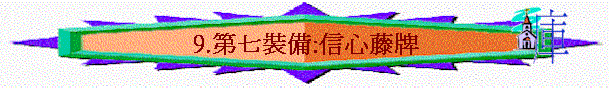

「此外，又拿著信德當作藤牌，可以滅盡那惡者一切的火箭；」弗6:16
～「信德」即信心，以弗所書又譯「信」、「真道」、「信心」
一.信心的本質
1.是「一信」的
「一主，一信，一洗，」弗4:5
2.是「一點不疑惑」的
「只要憑著信心求，一點不疑惑；因為那疑惑的人，就像海中的波浪，被風吹動翻騰。」雅1:6
「我們因信耶穌，就在他裡面放膽無懼，篤信不疑的來到神面前。」弗3:12
二.信心的源頭
「願平安、仁愛、信心、從父神和主耶穌基督歸與弟兄們！」弗6:23
～從父神和基督而來
三.信心的內容
1.信耶穌
「因此，我既聽見你們信從主耶穌，親愛眾聖徒，」弗1:15
「我們因信耶穌，就在他裡面放膽無懼，篤信不疑的來到神面前。」弗3:12
2.信真道
「直等到我們眾人在真道上同歸於一，認識神的兒子，得以長大成人，滿有基督長成的身量，」弗4:13
「堅固門徒的心，勸他們恆守所信的道；又說：「我們進入神的國，必須經歷許多艱難。」徒14:22
～「真道」有信的意思
四.信心的籐牌
「此外，又拿著信德當作藤牌，可以滅盡那惡者一切的火箭；」弗6:16
「凡聽見天國道理不明白的，那惡者就來，把所撒在他心裡的奪了去；這就是撒在路旁的了。」太13:19
～「那惡者」應指撒但，「火箭」----指牠的攻擊如火箭一般，有目標的射向信徒，是有攻擊性，是可以如火的蔓延
～「藤牌」是一種用藤條編織的盾牌。這種藤牌，編制簡單，使用輕便，加上藤本身質堅而富有伸縮性，圓滑堅韌，不易兵器砍射破入，所以藤牌傳入內地之後，很快便成為步兵的主要裝備之一。而滿清軍中裝備的藤牌兵，防護性能極好，甚至連早期的俄國火槍都打不穿！
～但原文「藤牌」是指盾牌，不一定用藤製成，可能是「羅馬戰盾」, 古時候的羅馬盾牌是一種堅固的防禦武器, 高約5英尺, 寬3尺, 羅馬人會先以木頭做出盾牌的外型, 然後再用七層堅韌的公牛皮或小牛皮, 一層層地綁在木框上, 直到盾牌有4,5英寸的厚度, 再用釘子固定。士兵預備上戰場時, 會先到附近的河邊, 把盾牌浸濕, 所以盾牌除了可抵禦利箭, 同時還能滅火。
～我們若拿起信心作藤牌，可以消滅仇敵的一切攻擊
1.抵擋令信徒懼怕的攻擊
「我們因信耶穌，就在他裡面放膽無懼，篤信不疑的來到神面前。」弗3:12
2.抵擋令信徒分裂的攻擊
「一主，一信，一洗，」弗4:5
「你們從前遠離神的人，如今卻在基督耶穌裡，靠著他的血，已經得親近了。因他使我們和睦（原文作因他是我們的和睦），將兩下合而為一，拆毀了中間隔斷的牆。」弗2:13-14
3.抵擋令信徒動揺的攻擊
「為要成全聖徒，各盡其職，建立基督的身體，直等到我們眾人在真道上同歸於一，認識神的兒子，得以長大成人，滿有基督長成的身量，使我們不再作小孩子，中了人的詭計和欺騙的法術，被一切異教之風搖動，飄來飄去，就隨從各樣的異端；」弗4:12-14
4.抵擋令信徒受苦的攻擊
「務要謹守，警醒。因為你們的仇敵魔鬼，如同吼叫的獅子，遍地遊行，尋找可吞吃的人。你們要用堅固的信心抵擋他，因為知道你們在世上的眾弟兄也是經歷這樣的苦難。」彼前5:8-9
「我們因信耶穌，就在他裡面放膽無懼，篤信不疑的來到神面前。所以，我求你們不要因我為你們所受的患難喪膽這原是你們的榮耀。」弗3:12-13